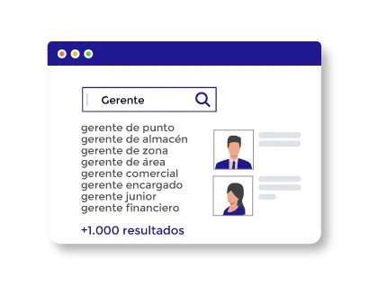
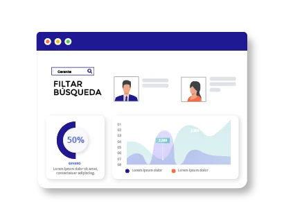
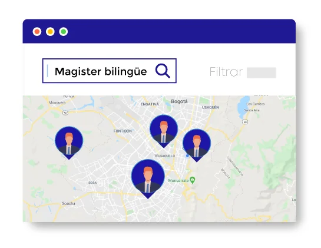
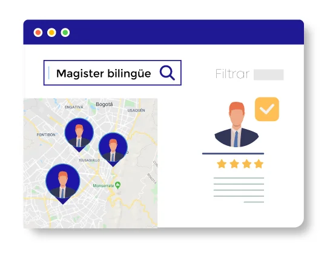

Con IFindIT encuentre
al candidato que mejor se ajusta
a sus vacantes laborales.
El recurso humano
ideal para su
organización.
Con IFindIT lleve la gestión de talento humano a un nuevo nivel. IFindIT permite acceder completamente a la información de sus aspirantes a posiciones laborales, buscando en su trayectoria y profundizando en sus verdaderas habilidades y experiencias.
El candidato ideal para la labor específica. Apoyo a la gestión de talento humano.
Los buscadores tradicionales apoyan la gestión de talento humano, ofreciendo opciones para buscar por categorías estandarizadas como el nombre, un cargo, el título profesional, los cuales pueden ser interpretados de muchas formas según la empresa, la industria o su ubicación.
IFindIT lee el texto libre (descripciones y/o anotaciones) de las hojas de vida para encontrar actividades, habilidades y experiencias concretas que incluyen personas a cargo o presupuesto, entre otras características que son elementos clave para encontrar el mejor candidato dentro de sus hojas de vida. Encuentre rápidamente el aspirante ideal entre miles de opciones.
Optimice su recurso humano.
Encuentre en sus candidatos logros concretos, actividades precisas o responsabilidades asignadas, para identificar la persona que más se adapta a una labor disponible. Acceda a la experiencia real de sus candidatos y descubra lo que su trayectoria dice, más que lo que ellos dicen de sí mismos.
IFindIT le facilita contratar al personal idóneo para una vacante. Navegar entre sus candidatos, ya sea en una base de datos de cientos o millones, y encontrar al que más se acerca a lo que busca, ahora es una realidad con IFindIT.



¿Por qué es diferente buscar perfiles con IFindIT?
Los buscadores tradicionales contienen el catálogo de habilidades del mercado pero ni los candidatos ni las posiciones laborales están homologadas, lo cual contamina la información de los aspirantes con un sinnúmero de criterios de búsqueda.
IFindIT busca por categorías y combina la búsqueda entre dichas categorías con el texto abierto de la hoja de vida, donde se encuentra la verdadera experiencia del aspirante, adicionalmente, le permite filtrar la búsqueda con tableros de control visuales que harán aún más efectiva y ágil la búsqueda.
Optimice su recurso humano.
Los tableros de control de IFindIT le permiten filtrar de manera gráfica, por ejemplo, el módulo de ubicación geográfica, le permitiría identificar el lugar en el que una capacitación o un programa empresarial sería más efectivo, porque le dará perspectiva sobre qué recurso humano tiene en esa área y qué requiere exactamente de ese grupo.
El filtrado puede llegar a ser tan exhaustivo y detallado como lo requiera el cargo a ocupar, si precisa de educación, ubicación, experiencia, lenguaje o nacionalidad, IFindIT le conducirá eficazmente al candidato.

